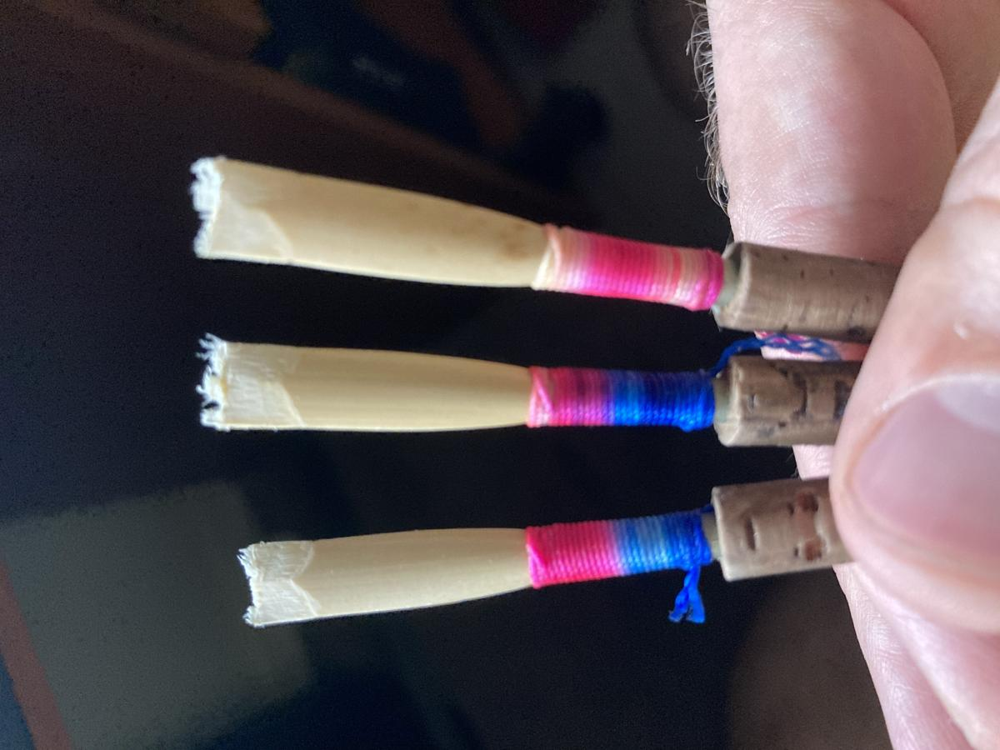
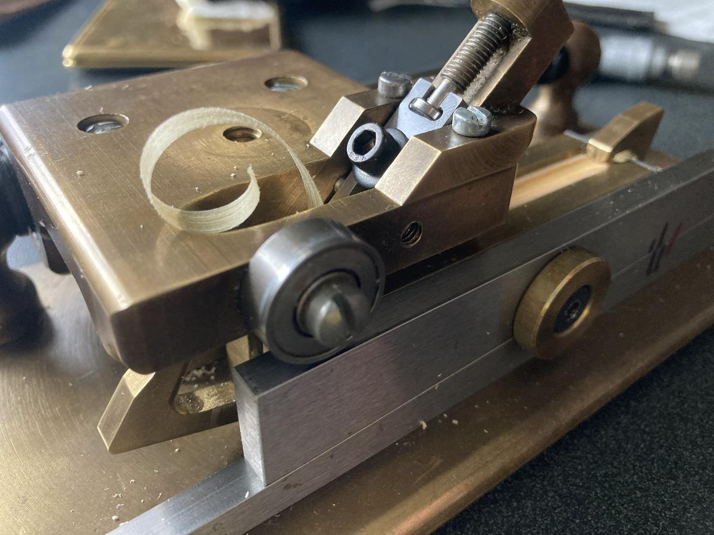
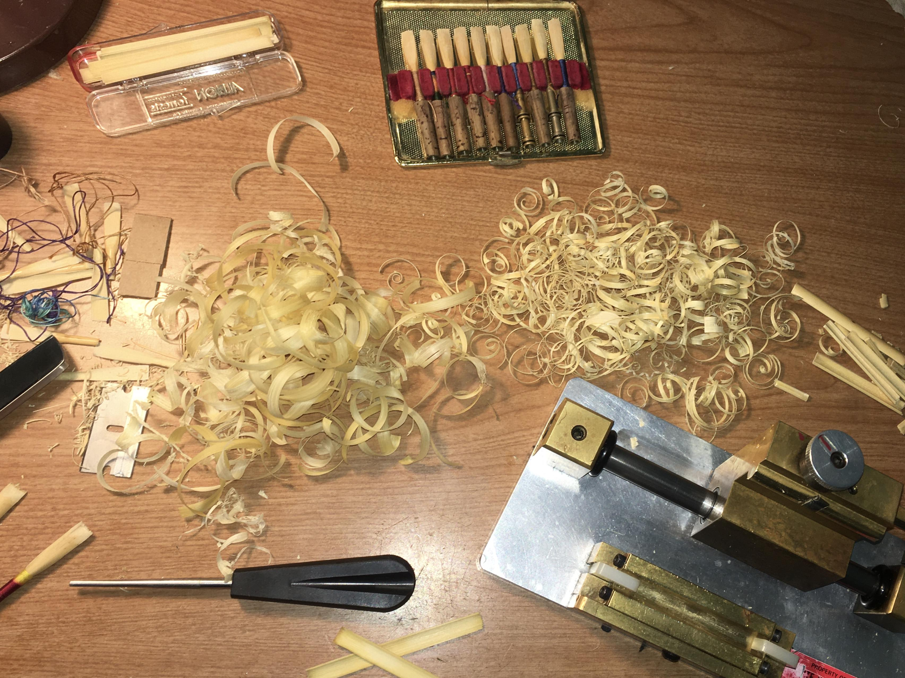
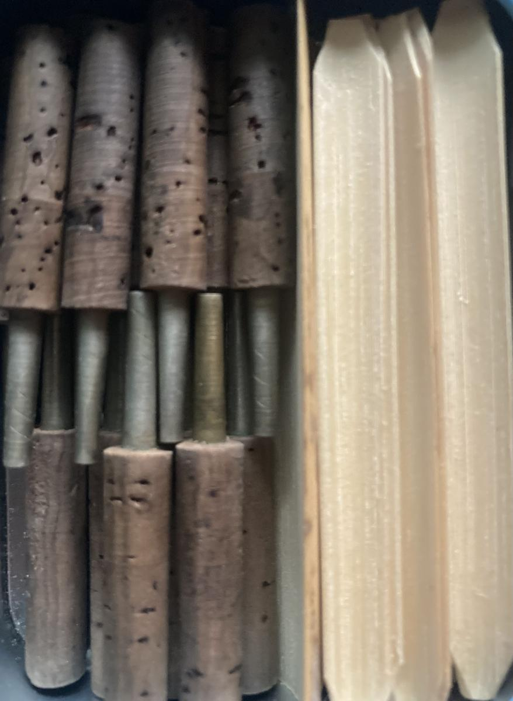
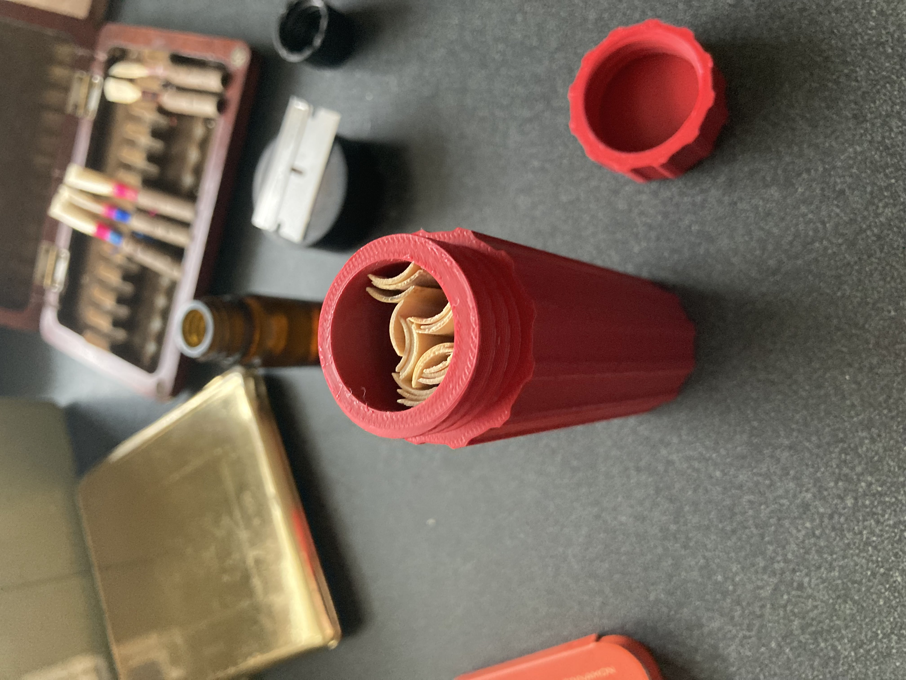
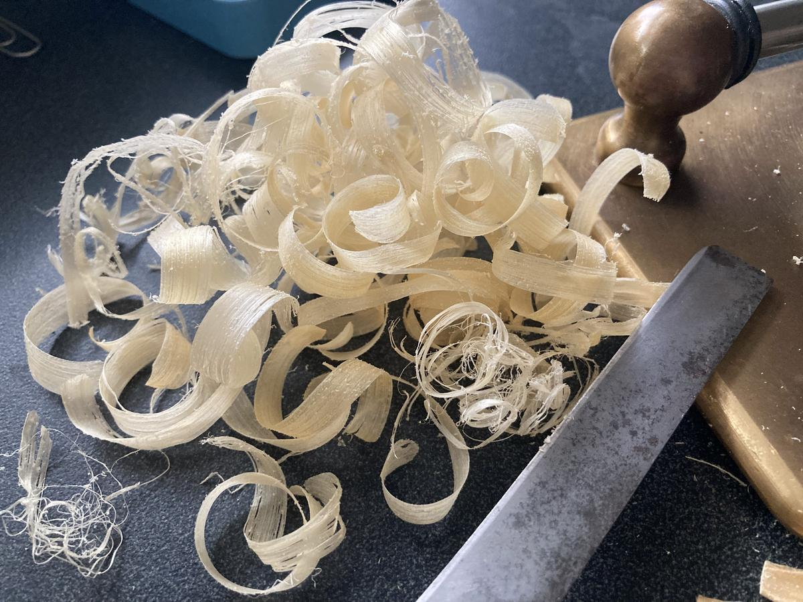
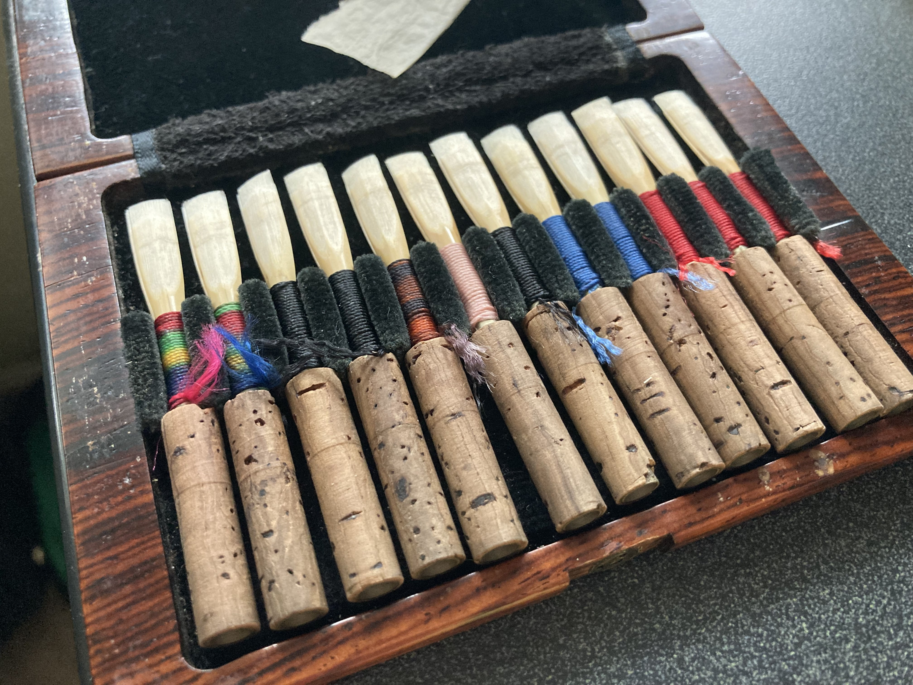

Handmade Oboe Reeds
Responsive, in tune, and easy to articulate —
reeds that let you focus on the music.






I started making reeds in high school around 2001, growing up in upstate New York with a love of the outdoors and a deep commitment to the oboe.
Today I'm completing my Master of Music in Oboe Performance at the University of North Texas. I believe a great reed shouldn't fight you — it should respond, stay in tune, and let you focus on the music.
Read My Story
From raw cane to finished reed — a look at the tools, techniques, and care that goes into every single one.
See the ProcessStudent or advanced? Oboe or English horn? A little guidance before you order goes a long way.
Read the GuideVisit my YouTube channel for a mix of performances — newer and older recordings, mistakes and all. The oboe is a journey, and I think it's important to show that.
▶ Watch on YouTube